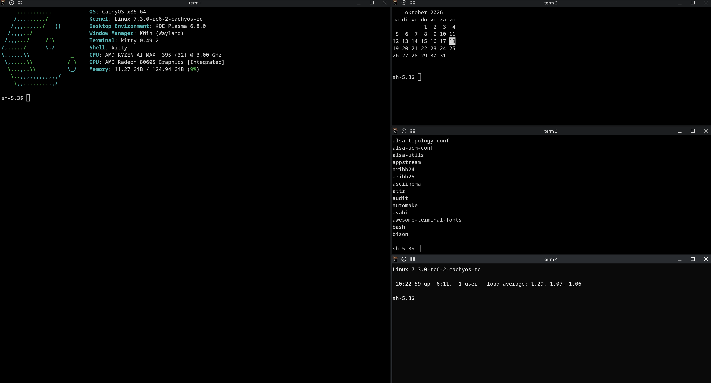
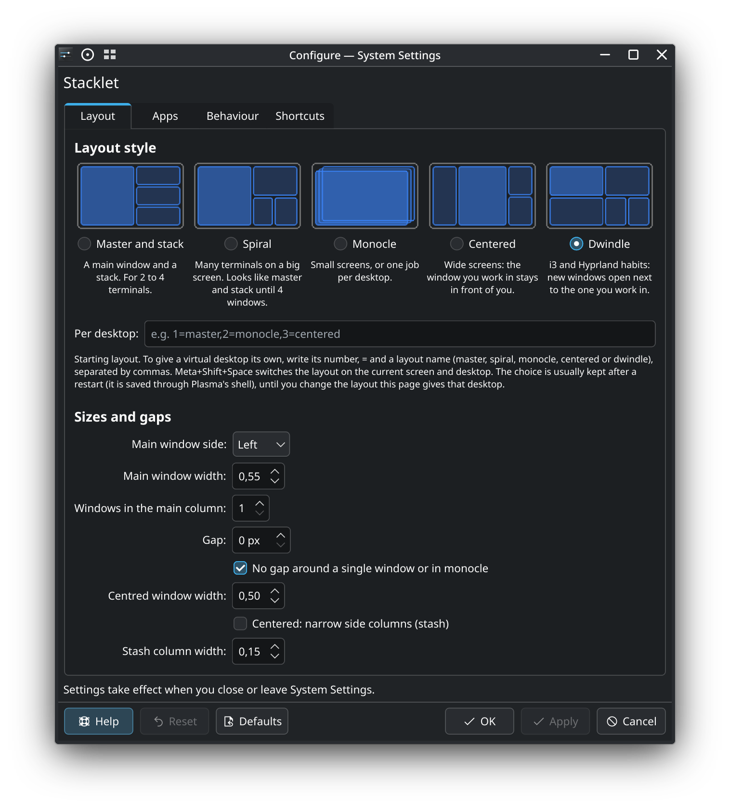

A small auto-tiling script for KDE Plasma 6.8 and Wayland. It tiles your terminals i3-style (master and stack, spiral, dwindle, monocle or centered master) and leaves every other window alone. It drives Plasma's native tiles, so resizing and Meta+T layouts keep working.
Get it on the KDE Store · Source on GitHub · Releases · Changelog


Full feature list, shortcuts and install steps are in the README.